.jpg) 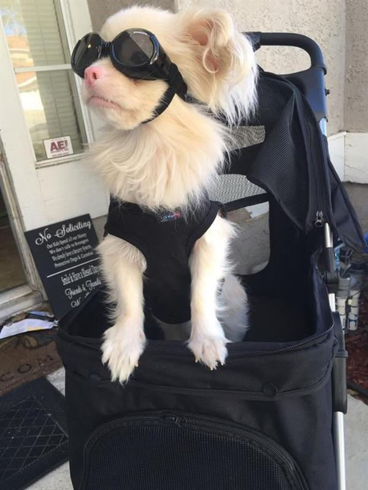
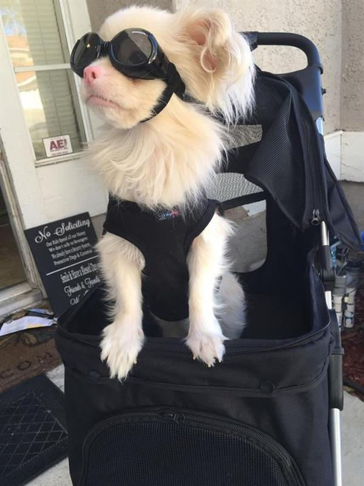
 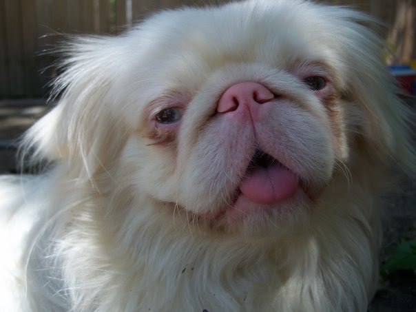
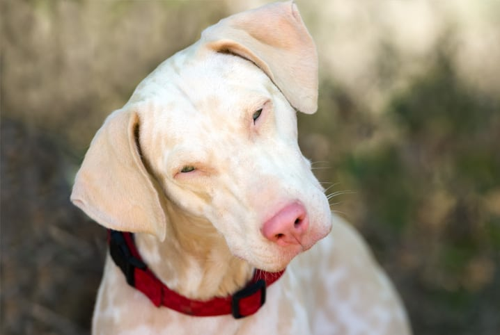
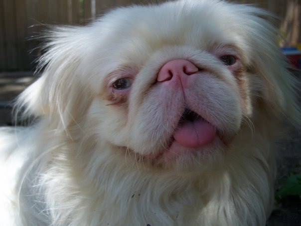
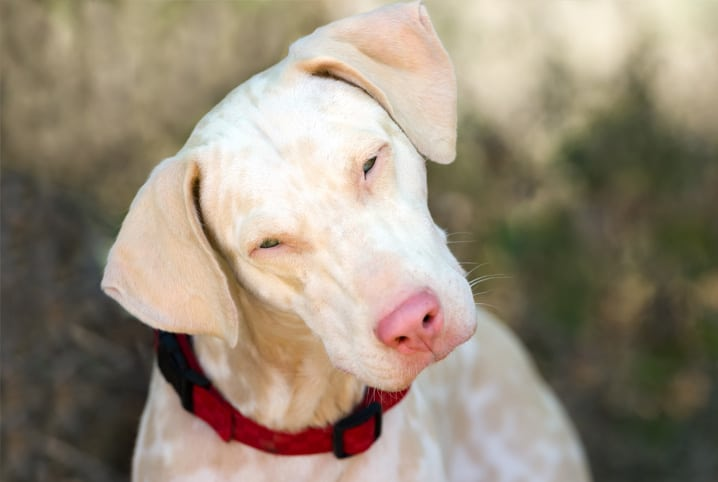
.jpeg) 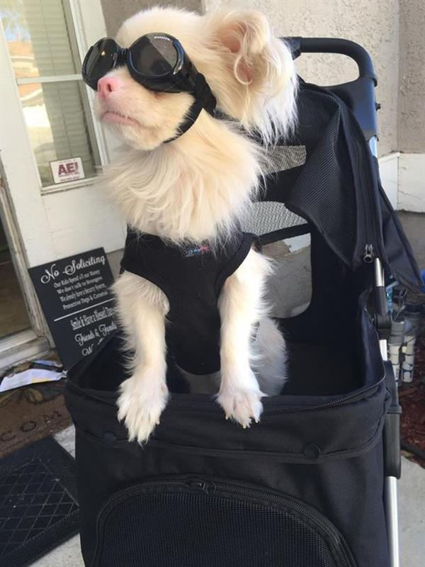
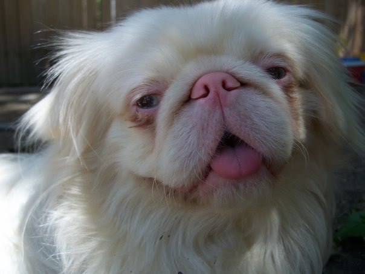
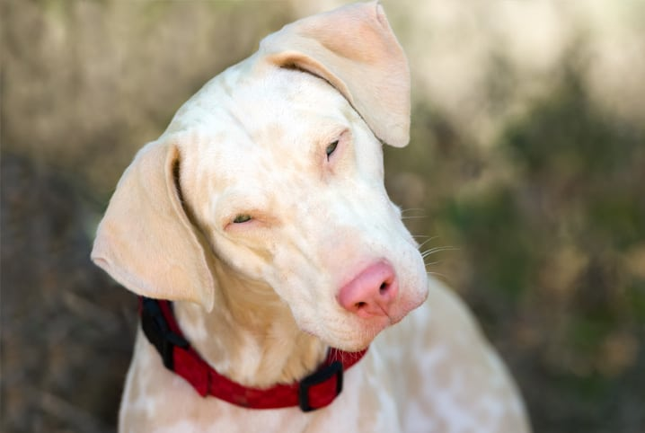
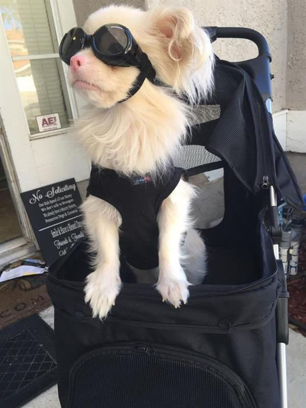
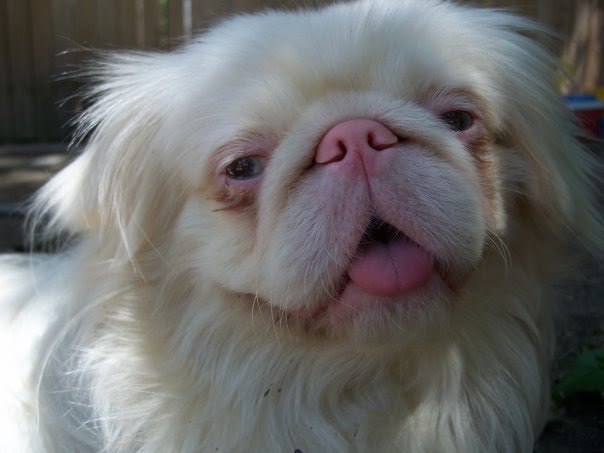
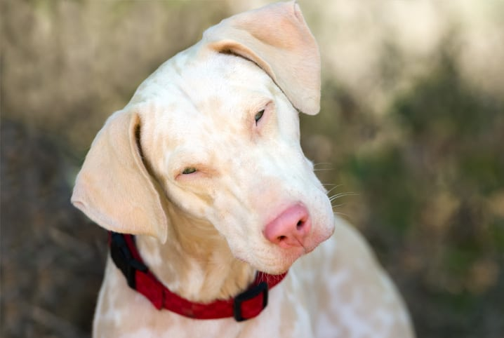
O albinismo é uma doença de natureza genética em que há um defeito na produção pelo organismo de melanina. Este defeito é a causa de uma ausência parcial ou total da pigmentação dos olhos, pele e pêlos do animal afetado.
São cães que não produzem nenhum pigmento e apresentam pelagem branca com pele, focinho, almofadas das patas, lábios rosados e íris rosadas ou vermelhas. E tem sido raramente observado ao longo da história em raças que não sejam da raça Doberman Pinscher.
O albinismo não provoca apenas a despigmentação da pele e pelagem dos animais como é comum de se imaginar. Cães que apresentam o fenótipo do albinismo possuem fotofobia, que é uma sensibilidade à luz, que os faz ficar com os olhos semiabertos sob luzes fortes como a do sol na tentativa de impedirem a entrada de parte da luz. Hipopigmentação também ocorre muito, ela é caracterizada pela cor azul e periferia bronzeada da íris, lábios e focinhos rosados e margens das pálpebras levemente pigmentadas. Suscetibilidade maior ao desenvolvimento de câncer de pele devido à ausência de melanina que atua como um protetor natural contra raios ultravioletas, regiões mais expostas devido à menor quantidade de pelos como nariz, orelha e arredores dos olhos são mais vulneráveis ao aparecimento de células cancerígenas.
A maior parte das espécies que possuem algum ser com fenótipo de albinismo sofrem mutações no gene da tirosinase (TYR). No entanto, não é somente ele que pode resultar no albinismo, por exemplo, família de transportadores de soluto 45, membro 2 (SLC45A2), é um dos genes identificados envolvidos na via da pigmentação. Há casos de albinismo nas mais diversas espécies relacionadas a mutações no gene SLC45A2, e isso resulta na redução na síntese de melanina em diferentes graus; e assim podendo gerar diversos fenótipos de albinismo (diferentes graus de coloração). Um exemplo do gene SLC45A2, é para o caso dos cachorros Doberman Pinscher deleção de 4081 pares de bases no gene SLC45A2, incluindo os últimos 163 bp do último exon (exon 7; g.27,141_31,223del [CanFam2]), causa o OCA na raça Doberman Pinscher.
A maior parte das espécies que possuem algum ser com fenótipo de albinismo sofrem mutações no gene da tirosinase (TYR). No entanto, não é somente ele que pode resultar no albinismo, por exemplo, família de transportadores de soluto 45, membro 2 (SLC45A2), é um dos genes identificados envolvidos na via da pigmentação. Há casos de albinismo nas mais diversas espécies relacionadas a mutações no gene SLC45A2, e isso resulta na redução na síntese de melanina em diferentes graus; e assim podendo gerar diversos fenótipos de albinismo (diferentes graus de coloração). Um exemplo do gene SLC45A2, é para o caso dos cachorros Doberman Pinscher deleção de 4081 pares de bases no gene SLC45A2, incluindo os últimos 163 bp do último exon (exon 7; g.27,141_31,223del [CanFam2]), causa o OCA na raça Doberman Pinscher.
Cães da raça doberman pinscher que eram homozigotos para uma deleção de 4081 pares de bases do gene SLC45A2 (entre as posições 77,062,968 e 77,067,051 no cromossomo 4) apresentavam sintomas de albinismo [3]. Dentre essas deleções, foram identificados até mesmo 163 pares de bases deletados pela mutação no exon 7 do gene, que é o último dos 7 exons, e uma região adjacente a jusante entre as posições de base. O ponto de exclusão dessa deleção terminou 509 pares de bases antes do próximo gene a jusante. Essa mutação prevê a substituição dos últimos 50 aminoácidos do exon 7 por 191 novos aminoácidos antes de um códon de parada a ser encontrado.
A ausência desses pares de bases apenas em indivíduos que possuem albinismo sugere que essa deleção é a causa do fenótipo do albinismo oculocutâneo nesses cães. Tal deleção provoca consequências estruturais para a estrutura da proteína codificada pelo gene SLC45A2, comprometendo a sua função de proteína transportadora de prótons e açúcares ajudando a regular o pH dos melanossomos. Quando esse transporte é prejudicado o ambiente nos melanossomos fica inadequado para a produção da tirosinase, que é uma enzima essencial para a produção de melanina, causando o fenótipo de ausência de pigmentação na pelagem dos cães.
Um cachorro da raça Lhasa Apso albino não apresentava a delação g.27141_31223del (CanFam2) em sua sequência do gene SLC45A2 assim como cães da raça Doberman Pinscher apresentam quando são albinos [4]. Nesse cachorro albino ocorre uma substituição não sinônima no sétimo exon, uma alteração de base c.1478G>A que resulta na substituição de uma glicina por um ácido aspártico (p.G493D) [4]. O que é interessante é que segundo [2] muito outras raças e espécies que são homozigóticas nesse alelo 493D também são albinas, mas há seres de outras raças que são homozigotas para o alelo 493G, e não para o alelo 493D e são também albinas. Dessa forma, o alelo 493D pode causar o albinismo quando homozigoto em várias raças de cães pequenos e de pelagem longa, mas ele não explica todo o albinismo em cães.
Vale ressaltar que cães Lhasa Apso albino não apresentam nenhuma mutação em sua sequência de DNA complementar (cDNA) do gene TYR [5][6]. Este gene, todavia, normalmente resulta em albinismo na maioria das espécies, até mesmo em humanos.
Códon de parada: Sequência específica de três nucleotídeos presentes no mRNA que sinalizam o final da tradução durante a síntese de proteínas.
Deleção do gene:É uma mutação genética em que parte do DNA de um organismo é perdida ou removida, dependendo do tamanho e qual região foi afetada do genoma, pode acarretar nas mais diversas consequências, desde de perda da função do gene a alteração da proteína codificada.
Exon:Sequência de DNA que faz parte de um gene e que é transcrito por um RNA mensageiro e eventualmente traduzido em proteína. Eles contém informações codificantes que servem de “instruções” para a produção da proteína.
Homoziogose:Quando um indivíduo possui duas cópias idênticas de um gene alterado (um em cada cromossomo correspondente).
Melanossomos:São organelas elípticas, altamente especializadas, nas quais ocorre síntese e deposição de melanina, armazenamento de tirosinase sintetizada pelos ribossomos, e representam a sede dos fenômenos bioquímicos em que originam a melanina. [3]
Melanócitos:Células produtoras de melanina.
Polimorfismo de Nucleotídeo Único (SNPs):É a variação de uma única base na sequência de DNA, é extremamente comum nas pessoas.
Variante sinônima ou silenciosa:Uma substituição de nucleotídeos que não resulta em uma mudança no aminoácido. Isso é possível porque vários códons codificam o mesmo aminoácido.[6]
Substituição não sinônima:Uma substituição de nucleotídeos que leva a uma substituição de aminoácidos. Isso pode ou não resultar em uma variante patogênica dependendo do efeito da substituição de aminoácidos na função e estrutura da proteína. [6]
Este site é parte do trabalho sobre a via da melanogênese feito pelos alunos: Emanuel Piveta Pozzobon, Lucas Nascimento da Silva e Rômulo Emanuel Rabelo Cruz na disciplina de Estrutura e Função de Proteínas lecionada pela Profª. Drª. Juliana Helena Costa Smetana no segundo semestre do curso de Bacharelado em Ciência e Tecnologia da Ilum Escola de Ciência.